New Patients are Always Welcome
Love your SMILE, every tooth counts!
Dentistry by Dr. Mark Poustie, Dr. Frank Korody & Dr. Mario Elkes. Appointments available before or after work or school.
Rated 5.0 from 200+ Google reviews →About Harbourside Dental
Harbourside Dental has been providing dental care for the whole family for over 40 years in the heart of Port Dalhousie. When Dr. Mark Poustie took ownership in 2016, it was important to him to honour the way the practice has always cared for and treated its patients while also modernizing the office. Today we combine our family-friendly care with state-of-the-art dental technology.
When patients come to our office, it is our goal to put them at ease and make them feel welcome. We are so thankful to all of our loyal patients who continue to trust us with their care, and we also welcome new patients to our office. We continue to be a family-run practice that offers personalized dental care to all patients.
The staff at Harbourside Dental are gentle and caring and are committed to helping our patients maintain the best dental health that they can.
Our Mission Statement
To our patients, we provide our knowledge, skill & expertise. We encourage our patients to share with us their needs & concerns. Together, we work to achieve optimal dental health.
Our Philosophy
Harbourside Dental is committed to helping patients achieve the best possible outcome for their dental health in a calm, caring environment. We encourage regular comprehensive exams so we can create a personalized treatment plan, and we explain every treatment option thoroughly.
Our Dental Professionals
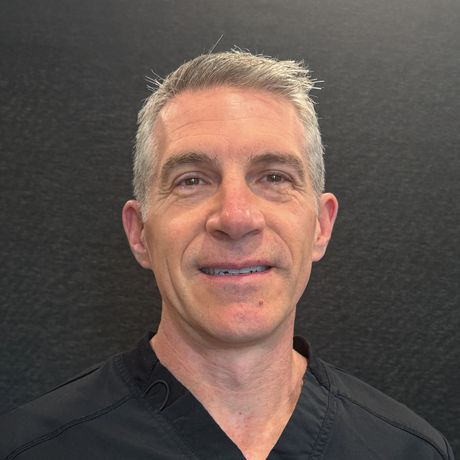
Dr. Mark Poustie grew up going to his uncle’s dental office with his family for all their dental work. Going to his uncle’s practice was always such a positive experience and was what instilled the desire in Mark, from a very young age, to become a dentist.
The road to dentistry started at the University of Western Ontario where Mark received his Bachelor of Science degree in Environmental Science and then went on to obtain his Masters of Science degree in anatomy and cell biology. From there, he went on to pursue his true passion and received his Doctorate of Dental Surgery degree, also from the University of Western Ontario.
Dr. Mark Poustie is a gentle and caring dentist who truly strives to provide patients with quality, personalized service and will go out of his way to make sure your experience is a positive one. He is interested in open communication with his patients, providing the highest level of care and clinical excellence.
Mark takes the time to explain the treatment choices and services available to his patients. He makes each individual feel they are a part of the decision-making process. His reputation for patient-friendly service has made him very well-liked.
Mark considers his professional and caring staff among his most valuable assets. The staff is truly a team and enjoys working together. Together, they create a relaxed office environment.
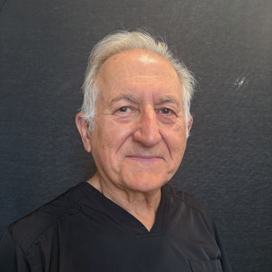
Personal History and Education: Dr. Korody received his doctorate from the University of Toronto in 1978 & is a past president of the Niagara Peninsula Dental Association (1991–1992).
At Work: Dr. Korody is a caring dentist who uses only the most advanced materials & procedures. The doctor & his team practice comfortable, health-centred dentistry with a strong emphasis on getting to know each patient. In addition to his technical proficiency, Dr. Korody is a careful listener & will explain beforehand which treatment is best for your individual needs.
He looks forward to showing you how regular dentistry can improve your life.
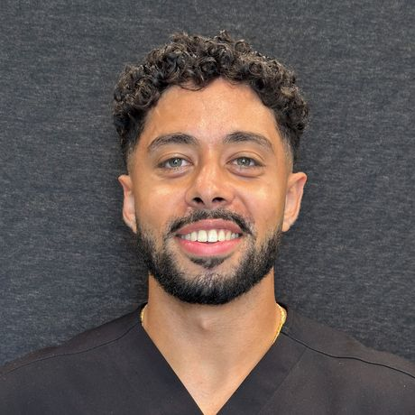
Dr. Mario is passionate about helping patients feel comfortable, informed, and confident in their dental care. He believes that every visit should be a positive experience and takes pride in creating a relaxed, welcoming environment while providing high-quality, personalized treatment.
He completed both his Bachelor’s and Master’s degrees at Brock University before earning his Doctor of Dental Surgery (DDS) from Western University. With a strong academic foundation and a patient-first approach, Dr. Mario enjoys working with patients of all ages and is committed to helping them achieve healthy, lasting smiles.
Fluent in English and Arabic, Dr. Mario enjoys connecting with patients from diverse backgrounds and making dental care accessible and comfortable for everyone.
When he’s not in the office, you’ll likely find him on the tennis court, playing guitar, or spending time with family and friends. He values staying active, continuous learning, and building genuine relationships with his patients and his community.
Dr. Mario is excited to be part of the team and looks forward to meeting you and helping you achieve your best smile.
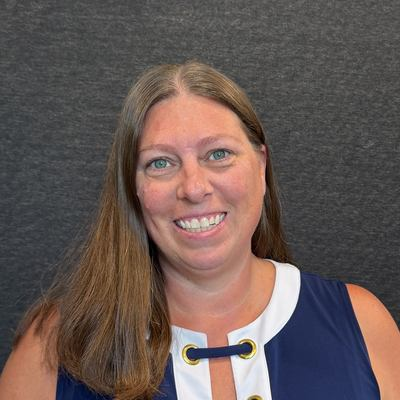
Shannon joined Harbourside Dental in 2016 and has been an integral part of the team ever since. As our Office Manager and Treatment Coordinator, Shannon works closely with both our patients and team to help ensure that every visit to our office is as comfortable and positive as possible.
With many years of experience at Harbourside Dental, Shannon is dedicated to helping patients feel informed, supported, and confident in their dental care. She is always happy to answer questions, assist with treatment planning, and help make your experience with our office a great one.
Please feel free to reach out to Shannon with any questions, suggestions, or dental needs. Her goal is to make sure every patient feels welcomed, heard, and well cared for.
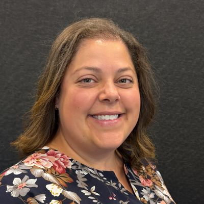
Candice has been a valued member of our team since 2009. As the friendly voice you hear when you call to book your hygiene appointments, she’s often the first point of contact for our patients.
Whether she’s coordinating appointments, helping behind the scenes, or assisting our hygienists in the office, Candice brings warmth, organization, and a genuine passion for patient care to everything she does.
She loves all aspects of her role and, most of all, loves getting to know our patients and seeing their smiles!
Tracey joined our practice in 2015 and brings with her over 30 years of experience working in the dental field. Her wealth of experience and genuine love for her work make her a wonderful part of our team.
Tracey especially enjoys getting to know and interacting with our patients. She loves creating a warm, welcoming environment and helping patients feel comfortable from the moment they walk through the door.
Outside of the dental office, Tracey enjoys spending quality time with her family and making special memories with her grandchildren.
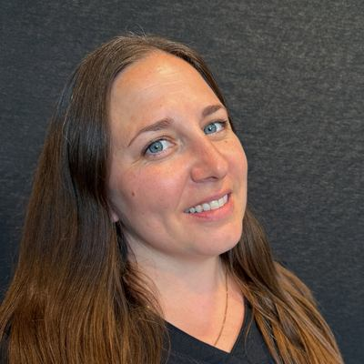
Nicole started her path in the dental field as far back as high school, where she participated in a co-op program at a local hometown dental office, in Grimsby, ON. She then went on to graduate from Niagara College of Applied Arts and Technology’s Certified Level II Dental Assisting program in 2007 and the Registered Dental Hygienist’s program in 2013. Working in the dental setting has been immensely rewarding and has become a passionate life path for Nicole; this truly reflects in the care that she gives to each and every one of her clients! Joining the Harbourside Dental team in September 2017 has led to an excellent fit amongst her highly professional and compassionate colleagues.
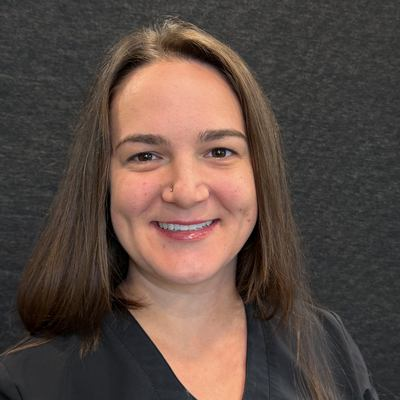
Shayna, a northern girl from Sudbury, Ontario, moved to the Niagara region to pursue her studies in dental assisting at Niagara College. Her passion for the dental field led her back to Niagara College where she graduated from the dental hygiene program in 2018. Shayna joined our practice in 2021.
Through a preventative approach and the desire to advocate for her patients’ oral and overall health, Shayna is humbled to have found a profession she is passionate about. This shows through her chairside skills and welcoming attitude.
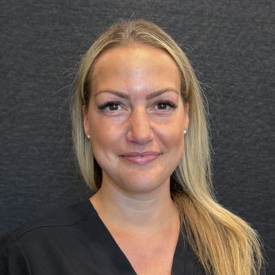
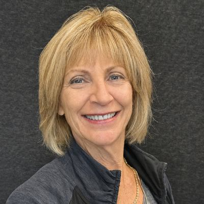
Dianne began her career as a Dental Assistant. She quickly returned to college and became a registered dental hygienist in 1982. Dianne has had the pleasure of working with the team at Harbourside Dental for many years. Dianne is a former clinical teacher at the Niagara College Dental Hygiene Program.
Dianne’s gentle touch and her smile help her clients feel comfortable. She is passionate about delivering the highest quality dental hygiene care to clients of all ages.
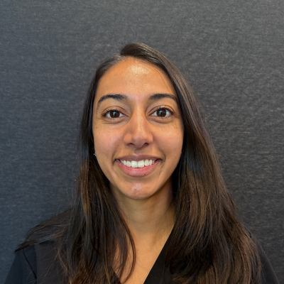
Nikkita obtained her BSc degree from Western University in Medical Sciences and French Studies. Her path in dentistry led her to obtain her dental hygiene diploma from George Brown College in 2019. Nikkita joined our team in 2026. Her passion for oral health is motivated by her interest in mental health; throughout her experience working for Public Health, she discovered a great connection between the two. In her spare time she volunteers with the Canadian Mental Health Association on the support line, helping those in need.
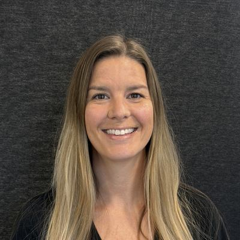
Like some of our other hygienists, Erin’s dental career began with a high school co-op placement in her hometown of Tecumseh near Windsor, ON. She had aspirations of becoming a dentist but after shadowing the hygienist, she decided a preventative approach to oral health and education better suited her personality. Over her years as a hygienist Erin has taken advantage of her time off to travel. Erin joined us as a permanent addition to our office in September 2020 after working at our office on many occasions for three years leading up to hiring her full time.
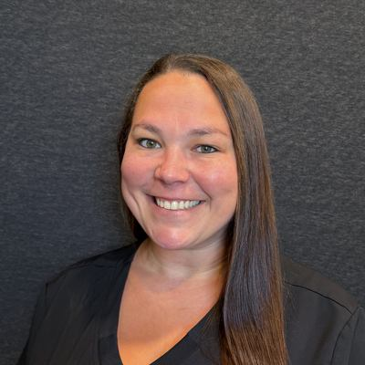
Jodi graduated as a Certified Level II Dental Assistant in 2008 and has worked as an assistant ever since. She has worked at a few offices in the Niagara Region which has helped her gain knowledge in many aspects of dentistry ranging from simple to more complex surgical cases. Jodi joined our practice in 2020. When she is not at the office she enjoys travelling and spending time with her family.
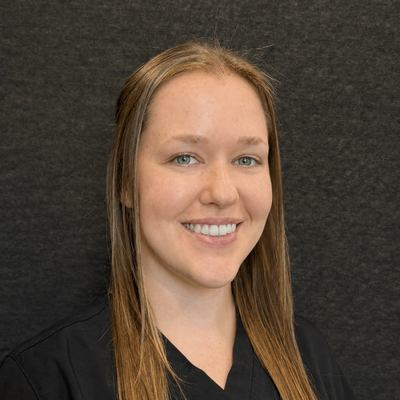
Emily joined us in May 2021 as a co-op student from Niagara College and has been a part of our team ever since. She graduated from Dental Office Administration back in 2018 and soon realized she loved the clinical aspect more, so she went back to school for Dental Assisting and graduated in June 2021. She hasn’t looked back!
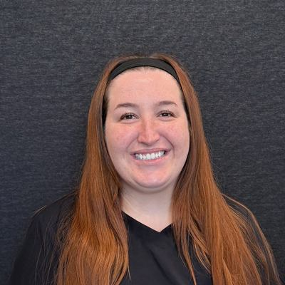
Christina joined our team in May 2022 after graduating from Niagara College. She has a gentle, caring nature and understands that everyone’s dental journey is unique.
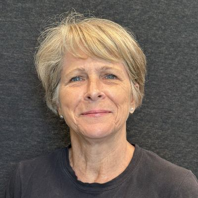
Sandra has returned from a brief period of retirement to re-join the team as a Chairside Assistant and Central Sterilization Assistant. Some of you may remember her as your Dental Hygienist from a few years ago. In total Sandra brings some 30 years of dental experience to share and provide care for you. Her main reason to return to the office was because she liked working with her colleagues and says it “is too much fun to leave behind”… just yet.
Our Dental Services
Harbourside Dental cares for people of all ages. Our goal is to educate our patients on how to achieve and maintain good oral health, and we believe it’s important that everyone understands their treatment plan. We take the time to talk with each patient and make sure they know all of their options, and our staff is always happy to answer any questions and help you meet your dental needs.
Comprehensive Exam
Preventive Services
Restorative Procedures
Cosmetic Procedures
Full and Partial Dentures
New patients: our new patient form is provided by our office — please call us for more information.
Fees, insurance & the CDCP
Covered by the Canadian Dental Care Plan? We welcome you.
The CDCP helps make dental care more affordable for eligible Canadian residents. Here’s a quick look at who qualifies, and how we can help with the rest.
You may qualify for the CDCP if you meet all four of these:
- No access to private dental insuranceYou don’t have coverage through work, a pension, a family member, or a plan you’ve purchased.
- You filed your tax return in CanadaYou (and your spouse or common-law partner, if applicable) filed for the previous year.
- Adjusted family net income under $90,000Your adjusted family net income is less than $90,000 per year.
- You’re a Canadian residentYou’re a Canadian resident for tax purposes.
Coverage through a provincial, territorial or federal social program? You may still qualify, plans can be coordinated so there’s no duplication.
Eligibility is determined by the Government of Canada. Summarized from canada.ca and may change, please confirm current requirements on the official site. If you’re approved, call us to book.
Payment & insurance
We’ll do our best to make your visit straightforward and help you understand your coverage before treatment.
Questions about coverage, billing or payment methods? Give us a call, we’re happy to help.
☎ (905) 937-1515Why families stay with us
The kind of dental office you actually look forward to visiting
A team that cares about you and each other
Our staff genuinely get along and it shows. Patients often comment that they feel very well cared for by our kind and compassionate team.
Familiar faces, year after year
Very low staff turnover means you see people you know and trust at every visit.
We treat you like family
We are a family owned practice and we treat our patients the way we would like our own family to be cared for.
A look around
Our office by the harbour.
A bright, welcoming practice in the heart of Port Dalhousie.
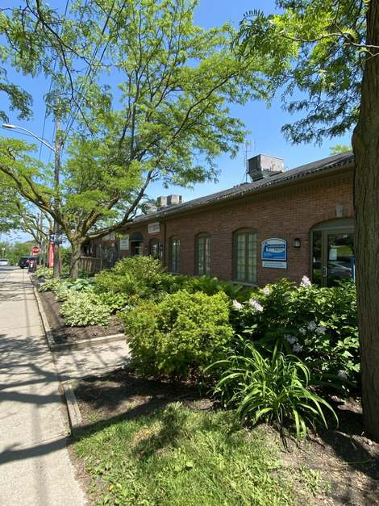
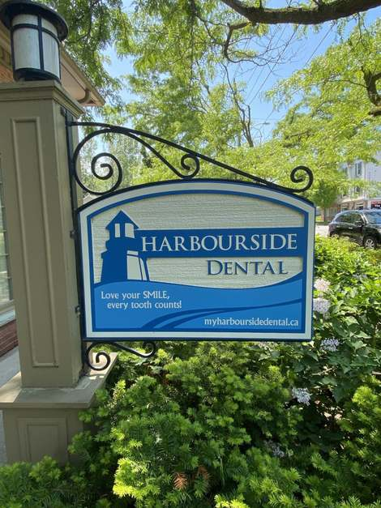
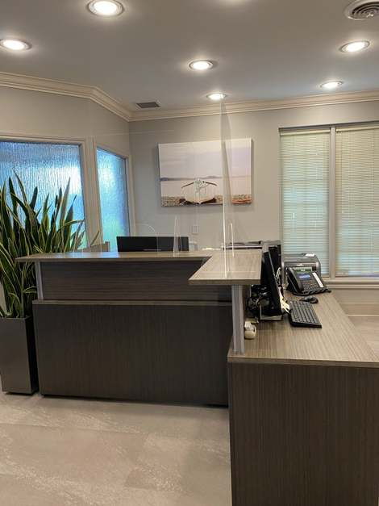
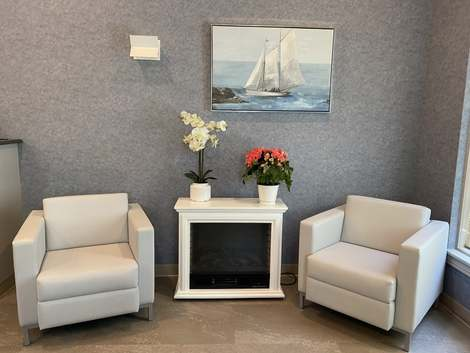
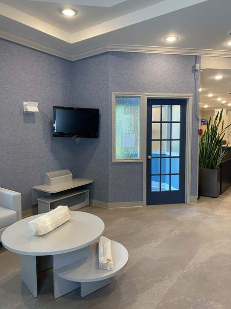
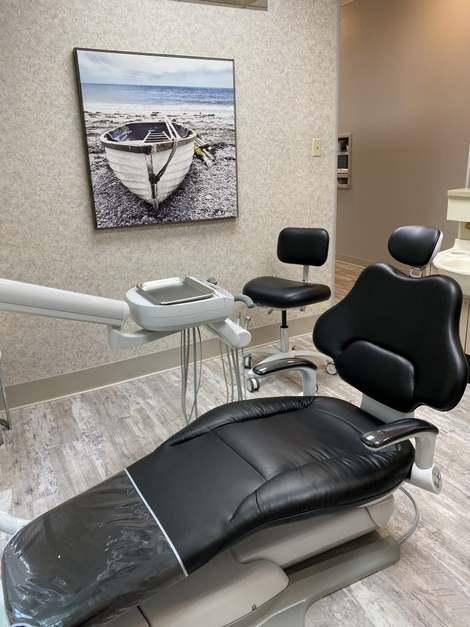
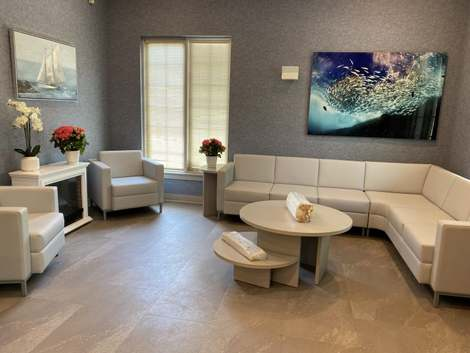
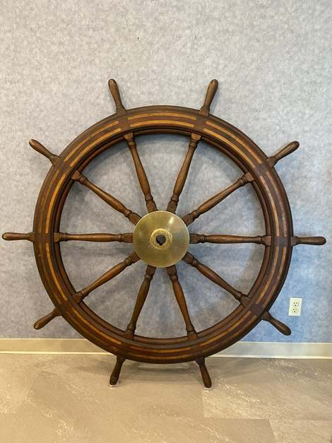
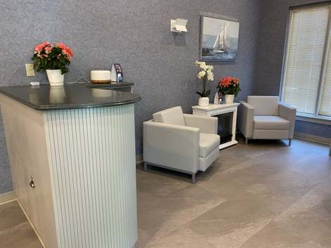
Find Us
Practice Hours & Location
We are conveniently located on the corner of Main and Lock streets in Port Dalhousie.
St. Catharines, ON L2N 5B6
On the corner of Main & Lock in Port Dalhousie
| Monday | 9:00 AM – 7:00 PM |
| Tuesday | 8:00 AM – 7:00 PM |
| Wednesday | 8:00 AM – 4:30 PM |
| Thursday | 8:00 AM – 4:30 PM |
| Friday | 8:00 AM – 2:00 PM |
| Saturday | Closed |
| Sunday | Closed |
Contact
We look forward to any feedback or questions you may have. Please fill in our contact form below. Our office will contact you within 24 hours.
Submitting opens your email app with the details filled in, addressed to the office. Please don’t include sensitive medical information.